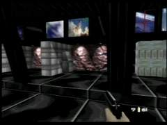
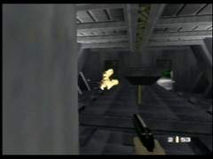
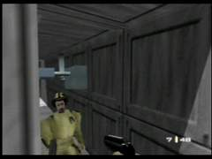
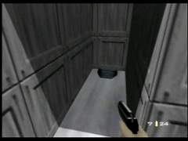

Ce Niveau est quand meme bien dur il faut le reconnaitre. Fusée, Requin, Drone Guns, Lasers, Moonraker Elites, ça fait beaucoup ! Commençons : Deja, vous ne pourrez prétendre attaquer les Objectifs que lorsque vous aurez la Carte de Requin. D'ici là, voilà mes conseils... Dans la Salle de Départ, occupez-vous du Garde à Droite. Il ne devrait pas trop poser de problèmes. Par contre, gaffe aux 2 autres Energumènes à Gauche qui ont tendance à balancer des Grenades. Une fois la Salle nettoyée, direction le Passage Secret !


Vous vous retrouverez dans une Salle plus grande. Une fois la Porte ouverte, laissez venir les Gardes pour ensuite leur tomber dessus. Dans 90% des cas, ils jetteront une Grenade. Fermez la Porte et reculez, ils périront sur leur propre Grenade ! Il en reste encore 3 à avoir. Il y a un garde derrière chaque Caisse Grise. Celui du milieu est le plus chiant. Il est préferable de l'avoir de très loin, depuis la porte par exemple. Vous pouvez attirer les Gardes de l'autre Salle en shootant violemment la porte avec votre PP7. Cueillez-les ensuite !


Note - On peut tomber du Pont pour aller tuer Requin, mais... Je ne vous le conseille pas. Car il faut ensuite attaquer la Salle des Drone Guns, et de là où on arrive, c'est presque impossible ! Continuez plutot tout droit... Dans la Salle aux Ecrans, tuez tout le monde et ensuite actionnez l'Ordinateur pour ouvrir le Mur. Butez les Gardes de loin avec l'AR33, et explosez un Ordinateur plus loin pour passer dans le Conduit. Lorsque vous passez sous la Fusée, une Porte derrière vous se ferme. Grouillez-vous et passez dans le Conduit derrière l'Ordinateur en cendres. Vous trouverez un Gilet, 2 Drone Guns, et 2 ou 3 Gardes avec des Lasers.






Au bout du Conduit, vous serez accueilli par un Drone Gun beaucoup plus loin. On peut l'avoir en avançant TOUT DOUCEMENT comme celui de Control au début. Une fois détruit, vous pourrez shooter celui juste sur votre Droite, ainsi que l'autre dans le meme Axe, mais beaucoup plus loin.


Ensuite, foncez hors du Conduit et tournez tout droit à gauche pour vous planquer dans le coin près de l'echelle. Il se peut qu'un Garde vous ait reperé (un avec un AR33) et vienne vous embetter. Tuez-le et occupez-vous un à un des 4 Gardes avec des Lasers au fond. Lorsque vous en avez eu 3 ou 4 (assez pour que la voie soit libre) zoomez au loin et dégommez le Dernier Drone Gun !!


Occupez-vous ensuite du Dernier Garde près du Terminal, au cas où vous ne l'auriez pas eu avant. Gaffe à son Laser ! Important : Remontez à l'Ordinateur qui ouvre le Sas de la Fusée et ouvrez le Passage pour vous permettre de revenir avec la Carte de Requin. Maintenant, empruntez l'autre conduit (celui par lequel un Garde est peut-etre venu vous embetter) et vous arriverez derriere Requin. Shootez-le puis tirez-vous en haut de l'Escalier que vous avez descendu. Comment tuer facilement Requin ? Collez-vous à lui et n'arretez pas les Lasers. Si possible, visez sa Tete !


Vous entendrez un BIP dans l'affolement. Vous avez sa Carte ! Alors là va falloir TRACER plus vite que la Lumière pour revenir dans la Salle aux Ecrans. Faites vite, car dès que vous avez tué Requin vont débouler à l'infini des Moonraker Elite avec 1 Laser dans chaque main qui ne vous lacheront PAS !
Reprogrammer la Destination de la Fusée : Tous Niveaux
Une fois dans la Salle aux Ecrans, ouvrez la Vitre avec la Carte de Requin. En fait, dès que vous avez tué Requin, enclenchez cette Carte, çà sera déja fait. Mettez la Disquette "Guidance Data" à gauche dans le lecteur, et prenez à Droite sur la table le "Launch Protocol Data".


Faire décoller la Fusée : Tous Niveaux
Une fois tout fait, revenez (encore) vers la Fusée. Dans la Grande Salle, allez à l'Ordinateur et ouvrez le Sas. Si vous etes encore vivant, foncez au fond de la Salle, là ou il y avait les 4 gardes avec les Lasers. Utilisez le Launch Protocol Data sur le Terminal et pendant le Compte à Rebours, restez là avec vos Double Lasers à shooter TOUT ce qui approche de vous !